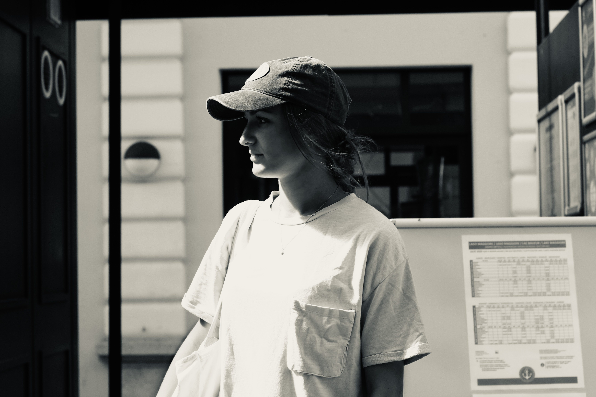

Media Engineer
Switzerland & U.S.A
24.10.1997
I am curious and interested in people, places, and true stories. When I am not with my friends or family, I like to travel and learn about new countries, and cultures.
Occupational activities
School education
Sep. 2021 -- Sep. 2024
Multimedia Production | Studies
Fachhochschule Graubünden FHGR
Chur
Sep. 2022 -- Feb. 2023
Transmedia Design | Studies Abroad
Fontys Academy for the Creative Economy
Tilburg, Netherlands
Jan. 2020 -- Mar. 2020
English Language School
Global Village School
Hawaii, USA
Aug. 2017 -- Aug. 2019
BM2, Profile Design
Berufsmaturitätsschule BMS
Zürich -- Altstetten
Aug. 2013 -- Aug. 2017
Architectural Draftswoman EFZ
Gewerbliche Berufsschule GBW
Wetzikon
Hobbies & Activities
Figure Skat | Surf | Snowboard | Ski | Soccer | Sports in General | Travel | Music | Playing Guitar | Photography | Image Editing | Graphics | Design | Attention to Detail | Keeping in touch with Family & Friends